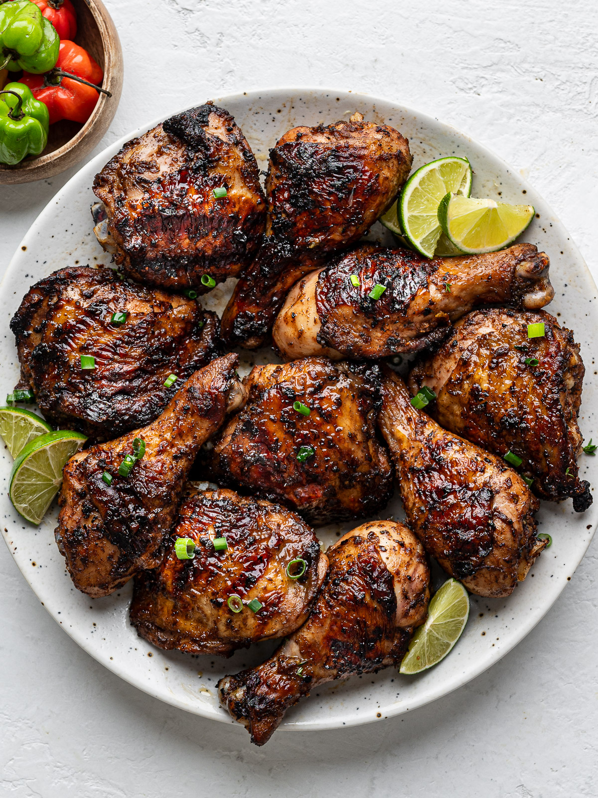

Jerk Chicken

Jerk chicken is a spicy, flavorful Jamaican dish made with marinated chicken that's grilled or baked to perfection.
Ingredients:
- Chicken (whole or pieces)
- Scotch Bonnet Peppers
- Garlic
- Ginger
- Thyme
- Allspice
- Brown Sugar
- Salt
- Soy Sauce
- Lime Juice
- Green Onions
Steps
- Marinate the Chicken:
- Combine chopped Scotch bonnet peppers, garlic, ginger, thyme, allspice, brown sugar, salt, soy sauce, and lime juice in a blender to make a marinade.
- Pour the marinade over the chicken and ensure it's well coated.
- Marinate the chicken in the fridge for at least 4 hours, preferably overnight for maximum flavor.
- Prepare for Grilling:
- Preheat your grill or oven to medium-high heat.
- Remove the chicken from the marinade and shake off excess.
- Cook the Chicken:
- Place the chicken on the grill or in the oven.
- Grill each side for 6-8 minutes or bake in the oven at 400°F (200°C) for 45 minutes, until the chicken is cooked through and has a charred appearance.
- Final Touches:
- Baste the chicken with any leftover marinade during the last 5 minutes of cooking for added flavor.
- Serve:
- Serve hot with rice and peas or steamed vegetables.
- Garnish with chopped green onions if desired.